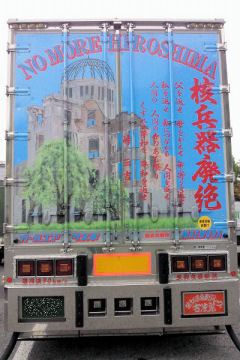

『序』
（にんげんをかえせ）
ちちをかえせ ははをかえせ
としよりをかえせ
こどもをかえせ
わたしをかえせ わたしにつながる
にんげんをかえせ
にんげんの にんげんのよのあるかぎり
くずれぬへいわを
へいわをかえせ
峠三吉（とうげ さんきち）
PREFACE
(GIVE BACK THE HUMAN)
Give me back my father
Give me back my mother
Give me back my grandparents
Give me back my children
Give me back myself
Give me back my people
As long as men live in this world
Immutable peace
Bring back peace
TOGE Sankichi